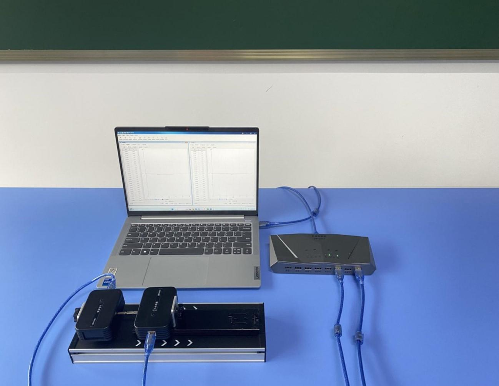
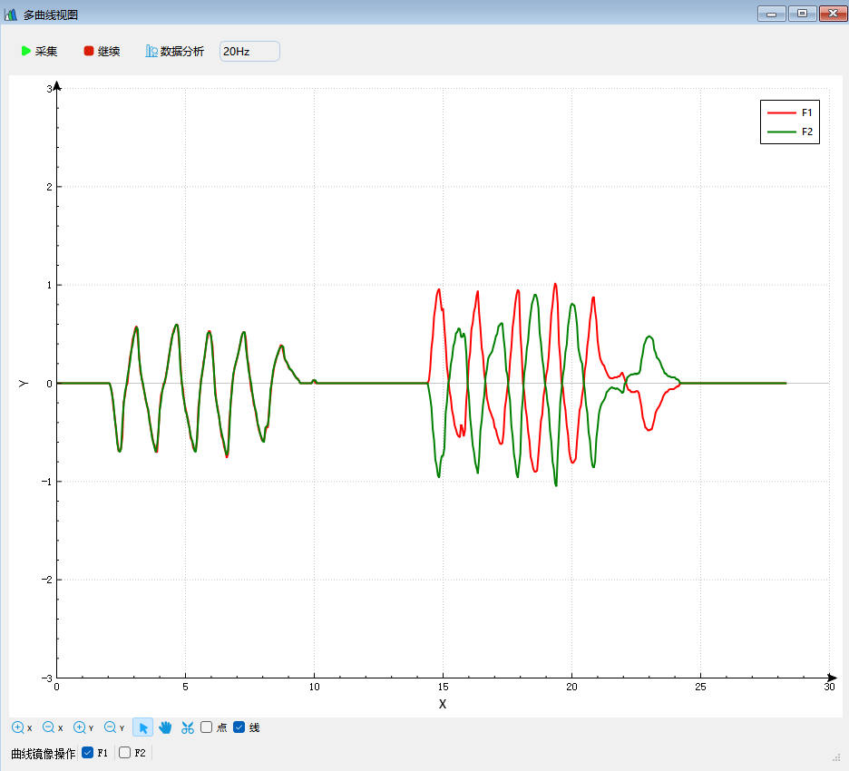

实验十八 探究牛顿第三定律
【实验目的】
通过实验观察总结作用力和反作用力的关系，验证牛顿第三定律。
【实验原理】
力是物体的相互作用，当一个物体对另一个物体有力的作用时必然也会受到另一个物体对它的力的作用。将这两个力中的一个称为作用力，则另一个力就是它的反作用力。实验中将两个力传感器对接并使它们发生相互作用，通过观察力传感器读数的变化可总结出作用力和反作用力之间的关系，验证牛顿第三定律。
【实验器材】
数据采集器、2个力传感器，作用力与反作用力实验器和计算机等。
【实验装置】

【实验操作步骤】
1.搭建好实验环境，将两个力传感器的测量钩取下后连接在一起；
2.打开实验数据分析软件，连接好数据采集器和力传感器，
将两个力传感器放置在水平桌面上，点击“调零”，打开“多曲线视图”，点击“采集”；
3.两手分别握住两个力传感器，相互作用对拉或者对压，观察窗口中两力传感器的读数曲线总是相互重合的，说明作用力和反作用力总是同时产生、同时消失，而且其大小总是相等的；
4.软件中规定力传感器测量钩受到拉力时显示的读数为正，受到压力时显示的读数为负。两个力传感器对接后，对拉时两传感器的读数均为正，对压时两传感器显示的读数均为负，也就是说不论何种操作，显示两力传感器读数的符号总是一致的。实验时可勾选多曲线显示窗口“镜像”，将其中一个传感器的读数进行镜像处理，使两传感器的正方向保持一致，这样使两力传感器发生相互作用时就可以看到两力传感器的读数曲线总是关于时间轴对称，说明在任何时刻作用力与反作用力总是大小相等、方向相反的。

【思考与讨论】
根据实验的结果，总结作用力和反作用力之间的关系。
【自由探究】
若一物体对另一物体不发生接触但仍有力的作用，这种情况下的作用力有其对应的反作用力吗？如果有，能不能用本实验中得到的结论表达这一对作用力和反作用力的关系呢？试设计实验证明你的猜想。